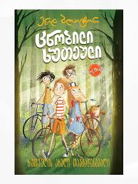
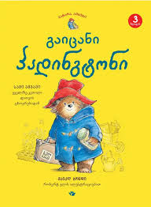

Greg Heffley is having a big year. He is the main suspect in vandalism - they accuse him of damaging the walls of the school. But he is innocent... almost innocent. The police also get involved in the case, and the heartbroken boy Tsripa watches who is knocking on the door of the house. However, he can't go anywhere from home, because suddenly a storm and heavy snowfall hit him. Greg knows he'll be held accountable whether the snow melts or not, but what punishment is worse than being locked up at home with his family for the holidays?
Julien, Dick, Annie, George and Tim - the famous five become participants in a new adventure! The friends gather again at Kirin's cottage and spend the Christmas holidays together, but this time they don't expect anything interesting to happen to them - the sea is constantly rough in winter and it is very dangerous to travel to Kirin Island at such a time. Just as the children hope for a new adventure, suddenly, while visiting Kirin's farm, Julien discovers a scrap of ancient cloth with strange clues on it. With the help of this discovery, inseparable friends will investigate another mysterious crime.
The bear, named Paddington, came to London from distant, remote Peru, and has since been living with the Browns at number 32 Windsor Gardens. Paddington's funny adventures and pranks are known to the world, but in this book you will learn only three very funny stories: how he becomes the owner of his own garden; How to win one very fun contest; How he finds himself on the most unusual journey with his best friend, Mr. Gruber.
